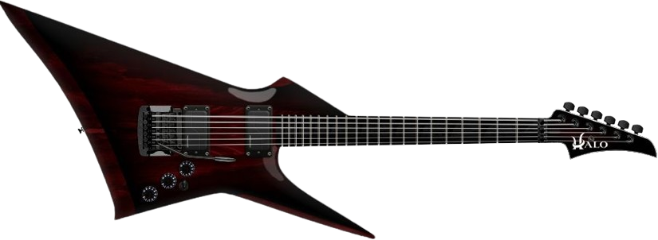

El Rock en Español es un vasto movimiento que **no tiene una característica única**, sino que es una explosión de estilos que **abarca todo**, desde el Pop Rock melódico hasta el Rock Duro y el Post-Punk.
Aquí se celebra la diversidad y la lírica poderosa de Hispanoamérica y España.
VOLVER SODA STEREO CAIFANES HÉROES DEL SILENCIO SARATOGA RATA BLANCA 